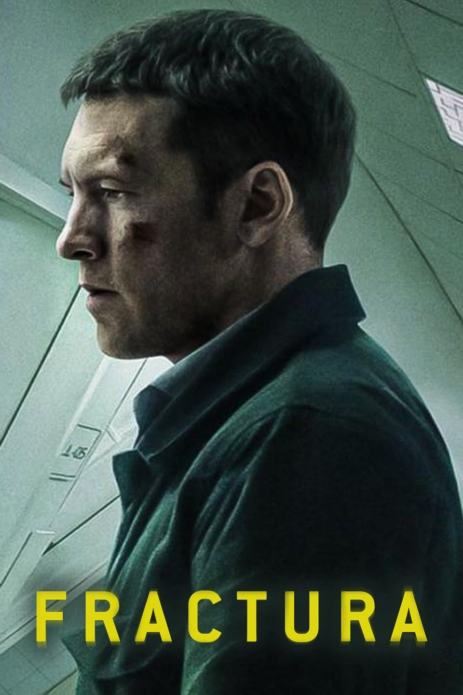
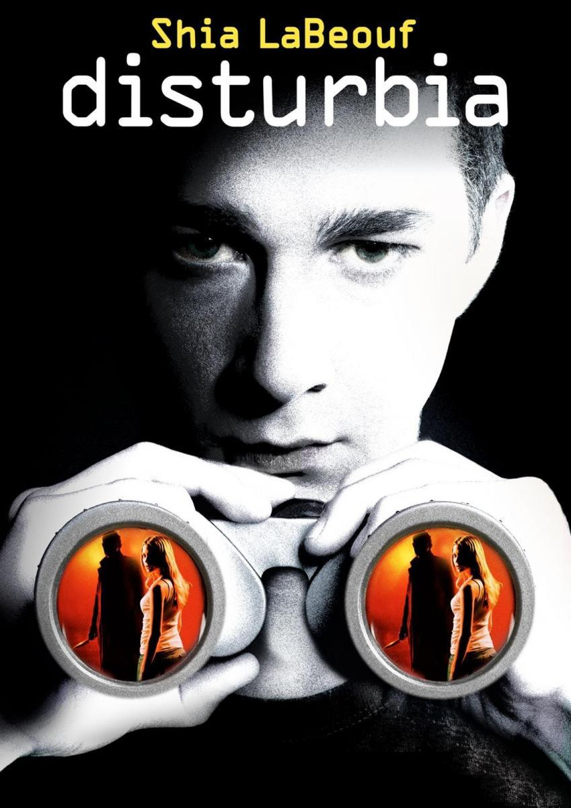

"CONTRATIEMPO"

Director: Oriul Paulo
Protagonistas: Mario Casas; Bárbara Lennie; José Coronado
La vida del exitoso empresario Adrián Doria se vuelve una pesadilla
cuando una mañana se despierta en una habitación
de hotel junto al cadáver de su amante. Él está convencido de su
inocencia, pero las pruebas demuestran lo contrario.
Después de que su esposa lo abandone, Adrián contrata los servicios
de Virginia Goodman, la mejor preparadora de testigos del país.
Asesora y cliente deberán trabajar para encontrar la manera de
demostrar la inocencia de Adrián.
"FRACTURA"
Director: Brad Anderson
Protagonistas: Sam Worthington; Lily Rabe; Stephen Tobolowsky.
Ray y su mujer viajan con su hija por el país, pero en una parada en
una gasolinera, la pequeña se tropieza y fractura el brazo.
Tras varias horas de espera en el hospital, la niña es atendida y
Ray, exhausto, se queda dormido. Al despertar, no hay nadie con
él,
ni noticias de su mujer e hija.
"CORRE"

Director: Aneesh Chaganty
Potagonistas:Sarah Paulson; Kiera Allen
Dicen que el amor de una madre es eterno pero para Chloe no es un
consuelo, sino una amenaza. Hay algo extraño, incluso
siniestro en la relación de ella y su madre, Diane. Diane ha criado
a su hija completamente aislada, controlando cada uno de
sus movimientos, pero Chloe pronto empezará a descubrir los oscuros
secretos de su madre.
"PERDIDA"
Director:David Fincher
Protagonistas:Ben Affleck; Rosamund Pike; Neil Patrick Harris
En su quinto aniversario de boda, Nick informa que su esposa Amy ha
desaparecido misteriosamente. Pronto la presión policial
y mediática hace que el retrato de felicidad doméstica que ofrece
Nick empiece a tambalearse y se convierte en sospechoso.
"DISTURBIA"
Director: D.J. Caruso
Protagonistas:Shia LaBeouf, Sarah Roemer y David Morse.
Desde la muerte de su padre, el joven Kale se ha alejado y ha
entristecido más, hasta que debe enfrentarse a un arresto
domiciliario.
Al sentirse encerrado, él voltea su atención a espiar a sus vecinos,
sospechando que uno de ellos es un asesino en serie. Sin embargo,
comienza a creer que su imaginación hiperactiva está obteniendo lo
mejor de él.
"LA MUJER EN LA VENTANA"

Director: Joe Wright
Protagonistas: Gary Oldman, Julianne Moore, Fred Hechinger.
La Dra. Anna Fox pasa sus días encerrada en su casa de Nueva York,
bebiendo vino mientras ve viejas películas y espía a sus vecinos.
Un día, mientras mira por la ventana, ve algo que sucede enfrente de
su casa, en el hogar de los Russell, una familia a la que todo el
barrio considera ejemplar.
"LA CHICA DEL TREN"

Director: Tate Taylor
Protagonistas:Emily Blunt, Haley Bennett, Justin Theroux, Rebecca Ferguson.
Rachel Watson, una mujer con problemas con el alcohol que envidia lo
poco que puede ver de la vida perfecta de Scott y Megan,
la pareja ante cuya casa pasa cada día de camino al trabajo,
descubre que algo terrible ha ocurrido en la vivienda y decide
entrometerse para intentar resolver el enigma.
"OLVIDADO"
Director: Jang Hang-jun
Protagonistas: Kang Ha-neul, Kim Mu-yeol, Moon Sung-keun
Cuando regresa su hermano secuestrado, un hombre sin ningún recuerdo de los últimos 19 días busca la verdad detrás del misterioso secuestro.